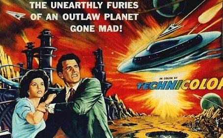

ASTRONOMY 8500 (O'Connell) Spring 2022
PROFESSIONAL DEVELOPMENT FOR
ASTRONOMY GRADUATE STUDENTS

SCHEDULE
PRESENTATIONS & RESOURCES
Class meetings 3:30-4:45 PM Tuesday, Astronomy Conference Room
Instructor: Robert O'Connell [rwo@virginia.edu]
Office: Astronomy 257; Office Hours: TWR 1-2pm
Archival Pages
Fall 2006 "Top-5 Lists for Astronomy Graduate Students"
Spring 2016 "Professional Development for Astronomy Graduate Students"
Spring 2018 "Professional Development for Astronomy Graduate Students"
Spring 2020 "Professional Development for Astronomy Graduate Students"
Last modified
January 2022
by
rwo